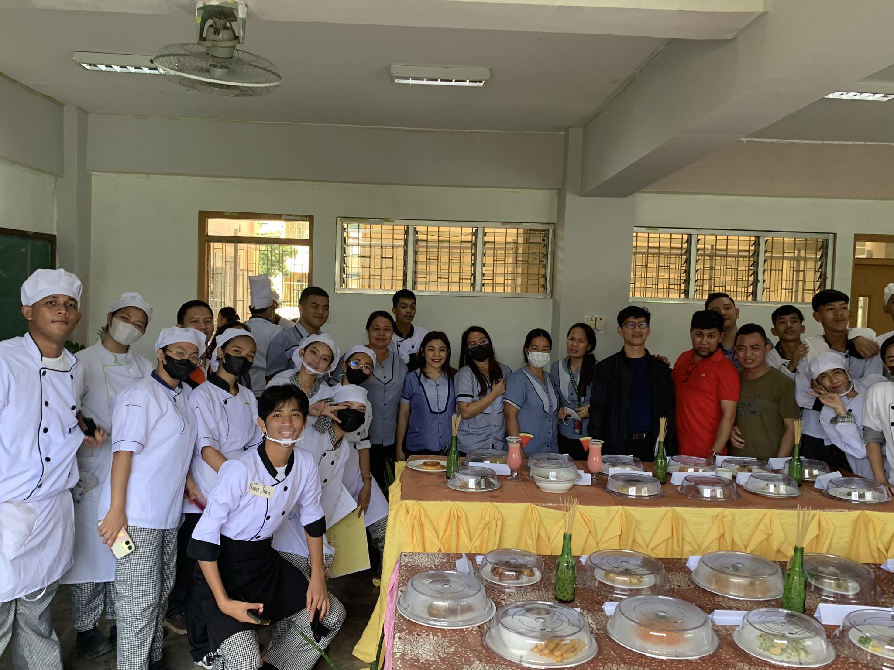

Home Economics 12 A
Home Economics 12 A, specifically in the kitchen, unfolds as an experiential journey transcending the mere acquisition of culinary expertise. Beyond the art of cooking, students delve into the science behind nutrition, exploring the impact of ingredients on health and well-being. The kitchen metamorphoses into a laboratory where experimentation meets gastronomy, and students learn to decipher the nutritional content of ingredients, crafting meals that harmonize taste and health.
This holistic approach transforms the kitchen from a mere space of culinary creation into a realm where students not only refine their cooking skills but also cultivate an understanding of the broader implications of their culinary choices. The intersection of